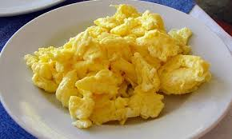

Huevos Revueltos

Los huevos revueltos son un desayuno clásico y rápido de preparar.
Se baten huevos con sal, se cocinan en una sartén con un poco de mantequilla o aceite a fuego medio,
removiéndolos constantemente hasta alcanzar una textura suave y esponjosa.
Ingredientes
- 4 Huevos
- Sal al gusto
- Aceite o mantequilla
Procedmiento
- En un recipiente romper los 4 huevos y revolver claras y yemas hasta tener un color amarillo
- Verter la mezcla en la sarten a fuego medio junto a la sal y el aceite o la mantequilla
- Revolver constantemente hasta tener una textura esponjosa y suave
- Servir acompañado de alguna bebida como café, chocolate , jugo de naranja , etc...
- ¡Disfrutar!